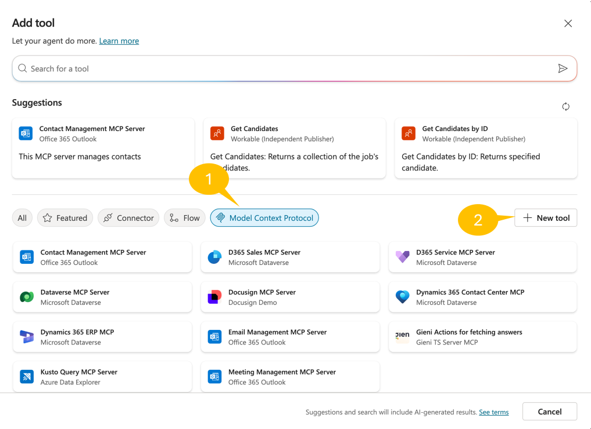
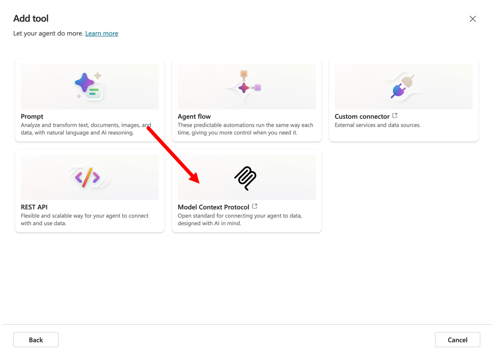
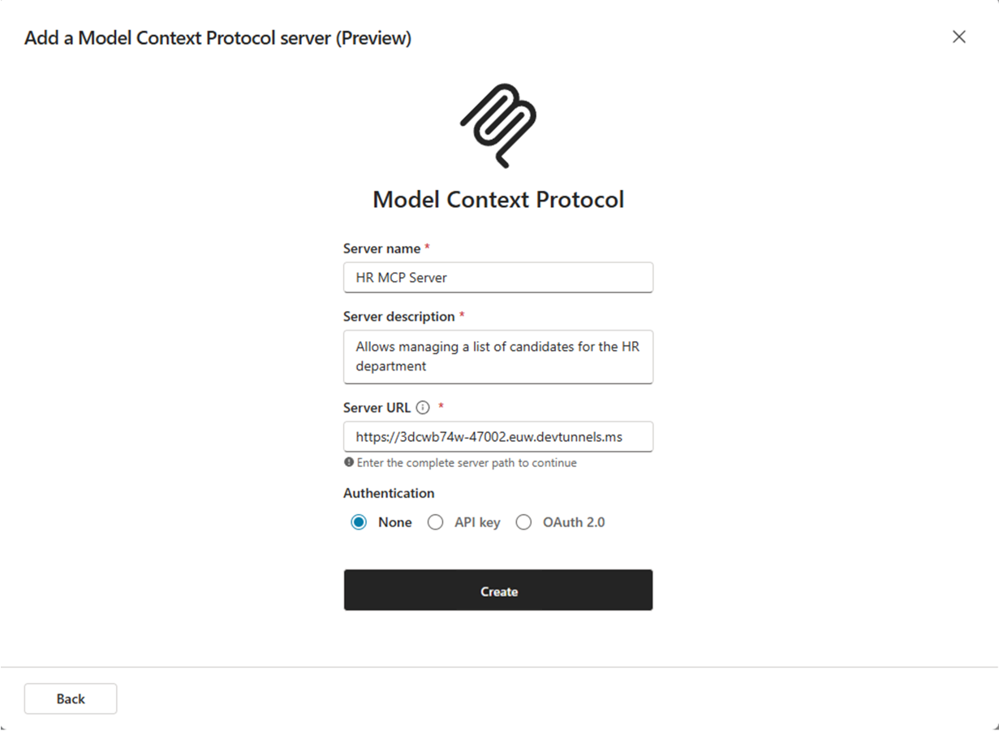
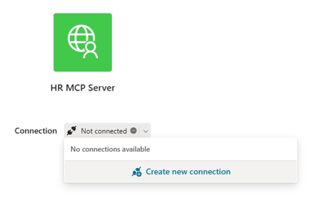
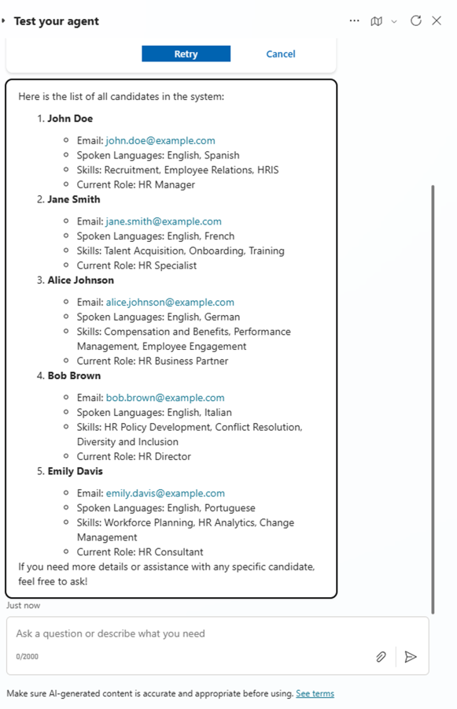
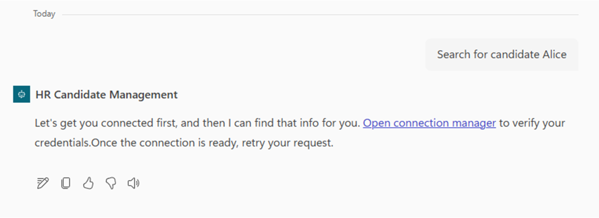
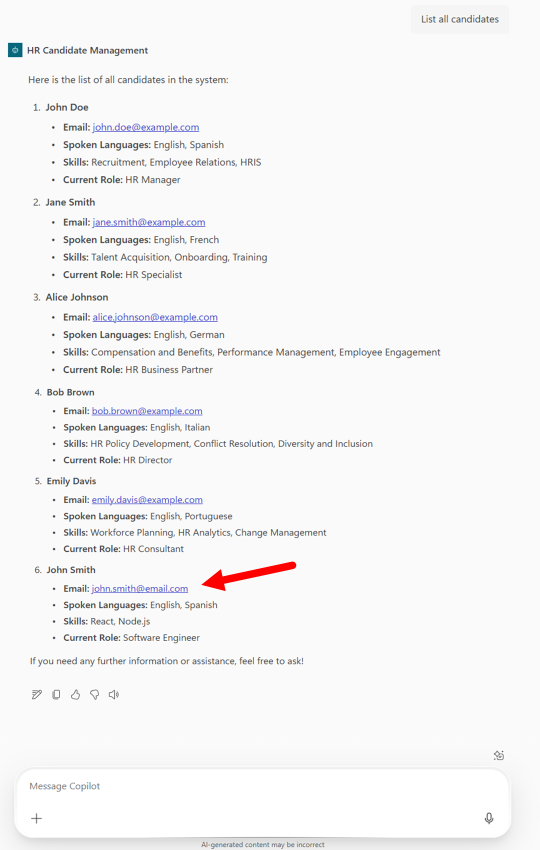

ラボ MCS6 - MCP サーバーの利用
このラボでは、Microsoft Copilot Studio で作成したエージェントを MCP (Model Context Protocol) サーバーで拡張する方法を学びます。具体的には、架空の求人候補者リストを管理するツールを提供する既存の MCP サーバーを利用します。MCP サーバーは次の機能を提供します。
- 候補者の一覧取得
- 条件で候補者を検索
- 新しい候補者の追加
- 既存候補者情報の更新
- 候補者の削除
Microsoft Copilot Studio で エージェント を構築したい場合は、次の ラボ を実施してください
MCP について学ぶ
このラボでは MCP の概念を紹介し、Copilot Studio と統合する方法を示します。MCP は AI アシスタントが外部データ ソースやツールに安全に接続できる新しいプロトコルです。詳細は Model Context Protocol (MCP) for beginners のトレーニング教材をご覧ください。
このラボで学ぶ内容:
- 既存の MCP サーバーを構成して接続する方法
- 外部サーバーの MCP ツールとリソースを利用する方法
- Copilot Studio エージェントと MCP サーバーを統合する方法
Exercise 1 : MCP サーバーのセットアップ
この演習では、求人候補者管理機能を提供する事前構築済み MCP サーバーをセットアップします。サーバーは Microsoft .NET ベースで、C# 用の MCP SDK を使用しています。ここではサーバーをローカルで実行できるようにダウンロードして構成します。
Step 1: MCP サーバーと前提条件の理解
このラボで利用する HR MCP サーバーは、次のツールを提供します。
- list_candidates: 候補者の全リストを取得
- search_candidates: 名前、メール、スキル、現在の役職で候補者を検索
- add_candidate: 新しい候補者を追加
- update_candidate: メールで既存候補者を更新
- remove_candidate: メールで候補者を削除
サーバーは次の候補者情報を管理します。
- 個人情報 (firstname、lastname、full name、email)
- 職務関連情報 (spoken languages、skills、current role)
開始前に以下を準備してください。
Step 2: MCP サーバーのダウンロードと実行
このラボでは、事前構築済みの HR MCP サーバーを使用します。こちら からサーバーファイルをダウンロードしてください。
ZIP を展開し、Visual Studio Code でフォルダーを開きます。サーバーは実装済みで、すぐに実行できます。

プロジェクトの主な要素は次のとおりです。
Configuration: MCP サーバーの構成を定義するHRMCPServerConfiguration.csData: 候補者リストを提供するcandidates.jsonServices: 候補者リストを読み込み管理するICandidateService.csとCandidateService.csTools: MCP ツールを定義するHRTools.csとツールで使用するデータモデルを定義するModels.csDevTunnel_Instructions.MD: MCP サーバーを dev tunnel で公開する手順Progam.cs: MCP サーバーを初期化するメイン エントリポイント
Visual Studio Code から新しいターミナルを開くか、通常のターミナルで MCP サーバープロジェクトのルートフォルダーへ移動し、次のコマンドで依存関係のインストール、ビルド、および実行を行います。
dotnet run
MCP サーバーが起動していることを確認します。ブラウザーで http://localhost:47002/ にアクセスすると、JSON 形式のエラーメッセージが表示されます。これは MCP サーバーに到達できていることを意味します。
Info
このラボ付属の HR MCP サーバーは本番環境向けではありません。メモリ内リストで動作し、複数の会話セッション間でデータを保持しません。HTTP で公開する MCP サーバー構築の基礎を理解する出発点として提供しています。たとえば、こちら には Fabian Williams (Microsoft) が実装した、コンテナーアプリと永続ストレージを備えたより高度なサーバーがあります。
Step 3: Dev tunnel の構成
次に、MCP サーバーを公開 URL でアクセスできるようにします。ローカル環境でサーバーを実行しているため、localhost を公開 URL へ変換するリバース プロキシ ツールが必要です。ここでは Microsoft 提供の dev tunnel を使用します。
- 手順 に従って dev tunnel をインストール
- 次のコマンドで dev tunnel にサインイン
devtunnel user login
- 次のコマンドで dev tunnel をホスト
Important
下記の hr-mcp 名は一意にする必要があります。例えば Rose さんなら hr-mcp-rose のように変更してください。Request not permitted. Unauthorized tunnel creation access ... といったエラーが出た場合は既に使用されている名前ですので、別名を指定してください。
devtunnel create hr-mcp -a --host-header unchanged
devtunnel port create hr-mcp -p 47002
devtunnel host hr-mcp
実行後、接続情報が表示されます。

「Connect via browser」の URL をコピーして保存します。ブラウザーでその URL にアクセスすると、次のような確認ページが表示される場合があります。

ラボ中は dev tunnel コマンドと MCP サーバーの両方を起動したままにしてください。再起動が必要な場合は devtunnel host hr-mcp を再実行します。
Step 4: MCP サーバーのテスト
ローカル環境で MCP サーバーをテストします。シンプルに MCP Inspector を利用しましょう。ターミナルで次のコマンドを実行します。
npx @modelcontextprotocol/inspector
Node.js が MCP Inspector をダウンロード・実行し、ターミナルには次のような出力が表示されます。

ブラウザーが自動起動し、以下の画面が表示されます。

次のように設定します。
- 1️⃣ Transport type: Streamable HTTP
- 2️⃣ URL: dev tunnel の「Connect via browser」URL
3️⃣ Connect を選択して MCP サーバーへ接続します。緑色の丸と Connected メッセージが表示されれば成功です。
続いて画面の Tools セクションで 1️⃣ List Tools を選択し、サーバーが公開するツール一覧を取得します。
2️⃣ list_candidates ツールを選択し、3️⃣ Run tool を押してツールを呼び出します。

成功すると緑色で Success と表示され、ツールの出力が確認できます。
History セクションでは送信履歴を確認できます。

これで Microsoft Copilot Studio のエージェントから MCP サーバーを利用する準備が整いました。
Exercise 2 : Copilot Studio で新しいエージェントを作成
この演習では、Exercise 1 で構成した MCP サーバーを利用する Copilot Studio エージェントを作成します。
Step 1: 新しいエージェントの作成
ブラウザーで https://copilotstudio.microsoft.com にアクセスし、対象 Microsoft 365 テナントの作業アカウントでサインインします。
Lab MCS0 - Setup (00-prerequisites.md) の Exercise 1 で作成した Copilot Dev Camp 環境を選択し、画面中央の Create an agent を選択してエージェントを作成します。
次の設定でエージェントを構成します。
- Name:
HR Candidate Management
- Description:
An AI assistant that helps manage HR candidates using MCP server integration
for comprehensive candidate management
- Instructions:
You are a helpful HR assistant that specializes in candidate management. You can help users search
for candidates, check their availability, get detailed candidate information, and add new
candidates to the system.
Always provide clear and helpful information about candidates, including their skills, experience,
contact details, and availability status.
- Agent's Model: GTP-5 Chat を選択

Publish を選択してエージェントを公開します。
Step 2: エージェントの会話スターター設定
Overview ページで Suggested prompts セクションを次のように追加します。
- Title:
List all candidates- Prompt:List all the candidates - Title:
Search candidates- Prompt:Search for candidates with name [NAME_TO_SEARCH] - Title:
Add new candidate- Prompt:Add a candidate with firstname [FIRSTNAME], lastname [LASTNAME], e-mail [EMAIL], role [ROLE], spoken languages [LANGUAGES], and skills [SKILLS]

Save を選択して変更を保存します。
Exercise 3 : MCP サーバーと Copilot Studio の統合
この演習では、MCP サーバーと Copilot Studio エージェントの統合を構成します。
Step 1: MCP サーバーが公開するツールの追加
エージェントで 1️⃣ Tools セクションへ移動し、2️⃣ + Add a tool を選択します。

1️⃣ Model Context Protocol グループを選択して、既に利用可能な MCP サーバーを確認します。次に 2️⃣ + New tool を選択して HR MCP サーバーを追加します。

ツールの種類を選択するダイアログで Model Context Protocol を選択します。

新しい MCP サーバーの名前、説明、URL、認証方法を入力するダイアログが開きます。
- Name:
HR MCP Server - Description:
Allows managing a list of candidates for the HR department - URL: dev tunnel の
[Connect via browser of your dev tunnel] - Authentication: None
入力後 Create を選択します。

ツールが作成されると、MCP サーバーへの接続を求めるダイアログが表示されます。

Not connected を選択し Create a new connection をクリックして接続設定を行います。

接続が完了したら Add and configure を選択し、MCP サーバーとツールが正しく登録されたことを確認します。

MCP サーバーが公開するすべてのツールがエージェントで利用可能になっていることを確認できます。

Step 2: MCP サーバー統合のテスト
右上の Publish をクリックしてエージェントを公開します。公開後、組み込みの Test パネルで次のプロンプトを試します。
List all candidates
エージェントは MCP サーバーの list_candidates ツールを使用し、HR システムに登録された全候補者を返すはずです。
ただし、候補者リストを取得するにはコネクタへ接続する必要があります。Copilot Studio が Open connection manager を求めてきたら MCP サーバーに接続し、Retry してください。

接続後、HR MCP サーバーから候補者リストが取得できます。

ローカルで MCP サーバーをデバッグ
開発者の方は HRTools.cs にブレークポイントを設定し、Visual Studio Code でデバッガーをアタッチすることで、MCP サーバーの動作を詳細に追跡できます。
エージェントを Microsoft 365 Copilot Chat でも利用可能にしましょう。1️⃣ Channels セクションを開き、2️⃣ Teams and Microsoft 365 Copilot チャンネルを選択、3️⃣ Make agent available in Microsoft 365 Copilot をチェックし、4️⃣ Add channel をクリックします。チャンネルが有効になるまで待ってパネルを閉じ、再度 Publish でエージェントを公開します。

再び Teams and Microsoft 365 Copilot チャンネルを開き、See agent in Microsoft 365 を選択してエージェントを Microsoft 365 Copilot に追加します。

表示されるウィンドウで Add → Open を選択し、Microsoft 365 Copilot 上でエージェントを試します。
エージェントの詳細
Teams and Microsoft 365 Copilot チャンネルの設定パネルから、説明やカスタム アイコンなど追加情報を設定できます。

Microsoft 365 Copilot でエージェントを試してみましょう。UI には先ほど設定した Suggested prompts が表示されます。たとえば次のプロンプトを入力します。
Search for candidate Alice

エージェントは MCP サーバーの search_candidates ツールを使用し、検索条件に一致する候補者を 1 名返すはずです。ただし Microsoft 365 Copilot でもコネクタへの再接続が必要なため、Copilot Studio の接続マネージャーで MCP サーバーに接続してください。

接続後、再度プロンプトを実行すると期待どおりの結果が得られます。

次に、より高度な add_candidate ツールを試して新しい候補者を追加します。以下のプロンプトを使用します。
Add a new candidate: John Smith, Software Engineer, skills: React, Node.js,
email: john.smith@email.com, speaks English and Spanish
エージェントは意図を理解し、add_candidate ツールに必要な引数を抽出してツールを実行し、新しい候補者を追加します。MCP サーバーからは追加完了の確認が返ります。

再度候補者リストを取得すると、John Smith が追加されていることを確認できます。

他にも次のようなプロンプトで遊んでみましょう。
Update the candidate with email bob.brown@example.com to speak also French
または
Add skill "Project Management" to candidate bob.brown@example.com
あるいは
Remove candidate bob.brown@example.com
エージェントは適切なツールを自動で呼び出し、プロンプトに応じて動作します。
これで完了です！エージェントは完全に機能し、HR MCP サーバーが提供するすべてのツールを利用できるようになりました。
おめでとうございます！
ラボ MCS6 - MCP サーバーの利用 を完了しました！
こちら から Lab MCS7 に進み、Copilot Studio で自律型エージェントの作成方法を学びましょう。